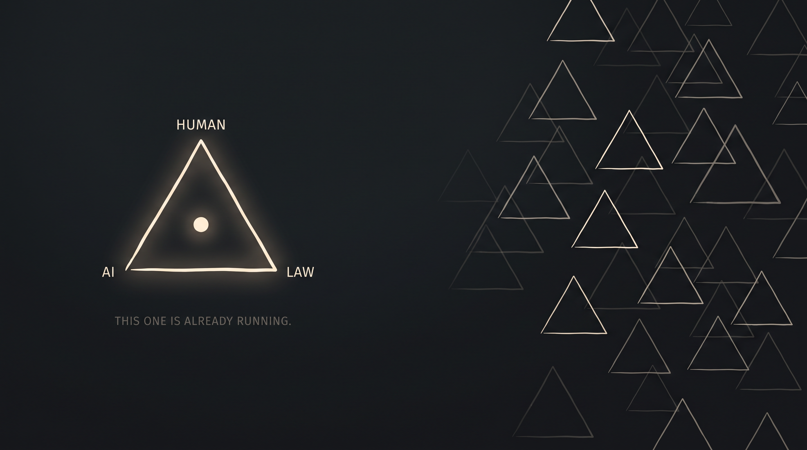

Litigants + public
Understand and act · public sources
●
≈→
○§ ☷ ↪
- §find the rule
- ☷understand the process
- ↪take the next step
National Conference of Appellate Court Clerks · Austin · 2026
A practical primer and a constitutional proposition.
The proposition is not settled law.
Courts are intrinsically positioned to lead AI adoption: the same transparency that makes public power reviewable makes intelligence useful—and may transform the relationship between people and institutions.
Photograph: Don Pettit · NASA · ISS Cupola
Start here
From orbit, city light and starlight seem to answer each other. That is the shape: civilization makes knowledge legible; intelligence flows back through it.

IntelligenceCivilizationThe current runs both ways: human knowledge gives intelligence something real to work with; intelligence returns expanded capacity. Purpose, rules, and human judgment determine the direction.
Four new words
Preparation
Publish and maintain the court’s knowledge so agents can find and use it—without displacing the people responsible for judgment.
The heart of it
Litigants + public
Clerks + court staff
Orchestration + improvement
Institutional strength
Legibility is not an add-on. It is a court’s native strength: public rules can be used, and official action can be reviewed.
A legible court→can be understood · assisted · reviewed→See how this rewrites the social contractThe constitutional proposition
Choose lawful intelligence.
Keep and carry cognitive continuity.
Receive usable reasons and meaningful review.
Underlying semantic + legal layer
A model generates language. An agent is a model placed in a loop that can pursue an assigned objective, retrieve sources, use tools, inspect results, and revise. A harness is the surrounding institutional environment: source materials, standing instructions, workflow state, available tools, permissions, security boundaries, tests, logging, escalation, and human review. Orchestration coordinates several agents or processes so that work can happen in parallel without dissolving responsibility.
Preparation therefore begins neither with purchasing a chatbot nor with training a new foundation model. It begins by collecting and maintaining the institution’s own public-facing materials and workflows: opinions, rules, forms, guidance, calendars, frequently asked questions, filing paths, and the answers staff repeatedly provide. Public sources can support a public-facing harness for litigants and community members. The same sources, combined with role-authorized internal materials and controls, can support staff. The shared source base should not erase the permission boundary.
Customization is a governed correction loop. Observed failures produce corrections; corrections update sources, instructions, workflows, tests, or permissions; the changed harness is tested again. This can improve the system that invokes a model without implying that the underlying model secretly retrains itself after every exchange. Recursive improvement becomes institutionally useful only when changes remain attributable, testable, reversible, and subject to accountable judgment.
AI augmentation depends on legibility. A court cannot reliably ground an agent in materials that are missing, contradictory, inaccessible, or unmaintained. Publishing usable rules, forms, procedures, opinions, and updates is therefore not merely public communication; it is the infrastructure through which people, staff, and their chosen systems can reason from the same public record.
The reciprocal question arises when institutions use machine intelligence to act upon people. If a model materially shapes a denial, classification, recommendation, or sanction, the affected person and reviewing court may need notice of that use, the legally and factually relevant basis, an adequate record, a meaningful way to correct error, and accountable human judgment. The design aim is not disclosure of source code in every dispute. It is enough legibility to make reasons contestable and review real.
These two directions form one transformation: institutions make public knowledge usable outward; institutional power becomes answerable inward. The emerging “right to intelligence” names the person’s practical ability to use lawful cognitive tools, preserve cognitive continuity and confidence, and meet machine-mediated power with intelligence capable of examining its record.
Liberty protects a person’s practical power to author a life. The American founding named the ends—life, liberty, and the pursuit of happiness. Property, papers, privacy, freedom of mind, and due process became legal means by which a person could remain a subject rather than an instrument of power.
This is not an originalist claim that the Founders anticipated AI, nor a neat historical genealogy. It is a functional claim: as technologies of power change, law has to decide what a person must control—and what government must explain—for liberty to remain real.
| Function | Existing anchor | AI-era question |
|---|---|---|
| Self-direction | Meyer: acquiring useful knowledge. Wooley: individual freedom of mind. | May a person choose lawful cognitive systems without a state or platform silently determining the permissible shape of thought? |
| Cognitive privacy | Riley: digital records are not merely another container. Carpenter: digital scale can alter Fourth Amendment analysis. | Who controls years of prompts, memories, inferences, drafts, and intimate reasoning? |
| Fair process | Mathews: private interest, error risk, value of safeguards, and government burden. Turner: substitute safeguards can matter. | When does due process require notice, usable reasons, and a meaningful opportunity to answer? |
| Reasoned power | State Farm: examine relevant data and articulate a satisfactory explanation. | Can an institution bind a person through a model if neither record nor explanation permits review? |
The Declaration’s “pursuit of Happiness” is not constitutional text. Substantive due process is not a secure shortcut to a novel affirmative right. Early disputes are more likely to arise through procedure, privacy, privilege, discovery, administrative review, court rules, procurement, and legislation.
An agency sends: “You do not satisfy the applicable eligibility criteria.” A predictive system materially shaped the result, but the notice identifies neither the decisive inputs nor the system’s role.
Chosen intelligence: practical freedom to use lawful cognitive tools. Cognitive continuity: control, portability, deletion, and usable export of memory. Protected confidence: privacy, privilege, work-product, and discovery rules that do not make serious thought safer only when technologically primitive.
Notice: disclosure when machine intelligence materially shapes a decision. Contestable reasons: inputs, governing rules, and reasons in human- and machine-readable form. Accountable judgment: a reachable human decision-maker and reviewable record.
These are design propositions. Their legal vehicles will differ by setting: constitutional procedure, administrative law, evidence, professional responsibility, civil rules, legislation, procurement, and technical standards.
Not: AI systems presently have constitutional rights or legal personhood.
Not: the Constitution guarantees every person a government-provided AI.
Not: every consumer-chatbot conversation is privileged.
Not: due process always requires technological parity with the state.
Not: local control alone makes a system accurate or accountable.
Not: innovation excuses invented authority, opaque reasoning, or untraceable harm.
Quotations and propositions were checked against the linked texts on August 4, 2026. This is legal theory and design, not legal advice or a representation that a court has adopted a “right to intelligence.”